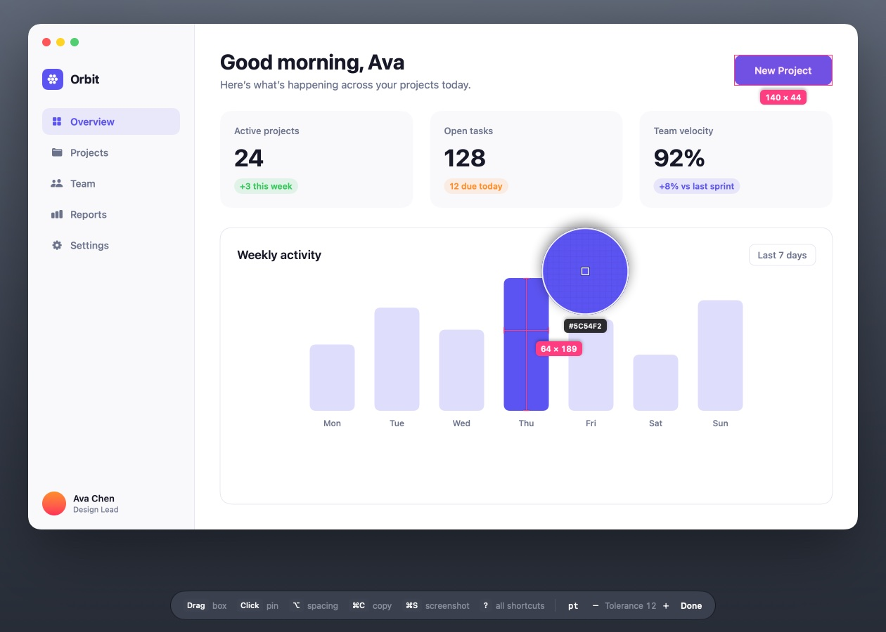
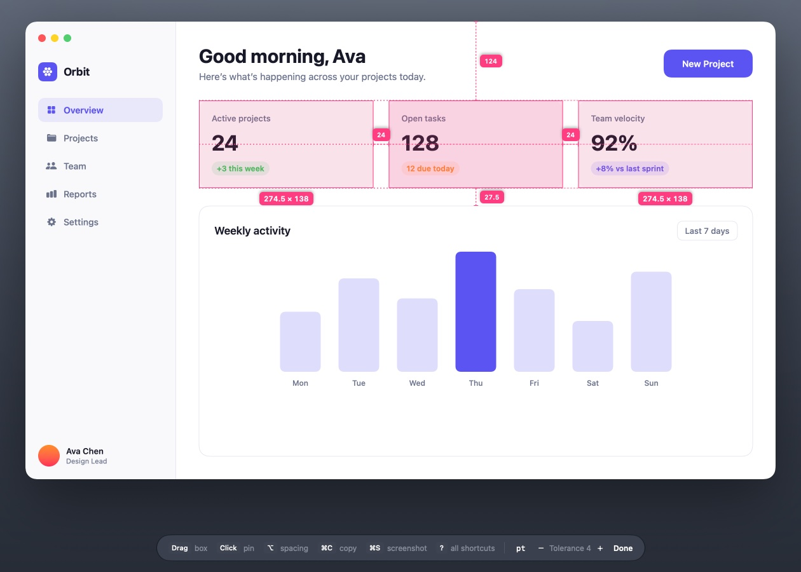
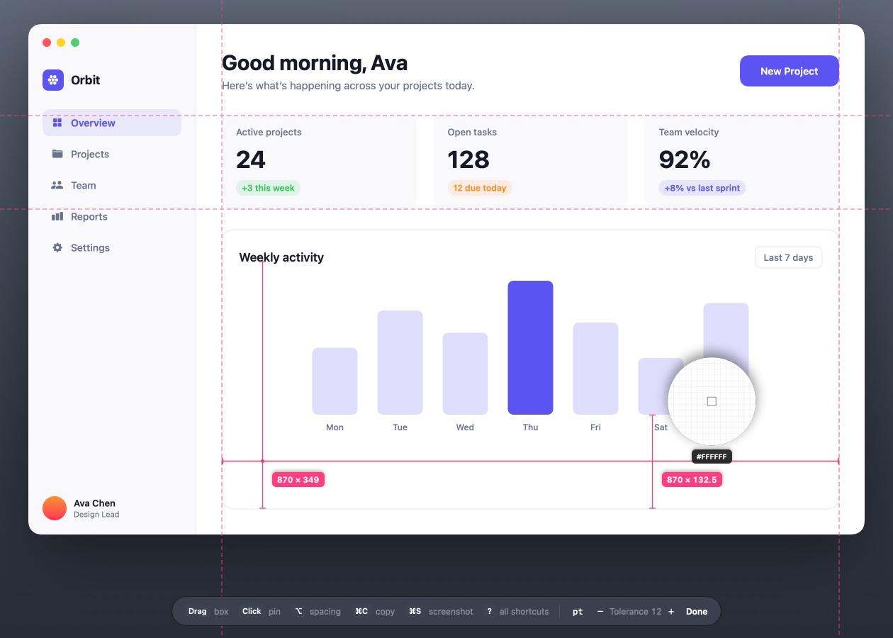

A screen ruler for macOS
Measure anything on your screen.
Press ⇧⌘2 and point. PixelMark finds the edges around the pointer and shows the size between them. Drag a box and it snaps to whatever is inside.
Free and open source (MIT) · macOS 26 or later · Signed and notarized
Good morning, Ava
Here’s what’s happening today.
Features
When you press the shortcut, PixelMark takes a still image of each display and measures against it, so it works on anything: apps, websites, design files, images and video.
Edge distances
Lines run from the pointer to the nearest edge in each direction, labeled with the width and height between them.
Boxes that snap
Drag around an element and the box shrinks to fit its content. Hold ⇧ for a free box.
Spacing
Hold ⌥ over a box to see the gaps to its neighbors. Boxes that line up get alignment lines.
Guides
Press H or V to drop a guide. Neighboring guides show the distance between them.
Loupe and colors
See the pixels under the pointer up close. Press C to copy their hex value.
Copy and save
⌘C copies a size as 320 × 48, CSS or SwiftUI. ⌘S saves a screenshot with your marks.
Points or pixels
Points match your design files; pixels are the device pixels on a Retina display. Press U to switch.
Adjustable tolerance
Ignore shadows and anti-aliasing, or stop at a faint 1 px border. Press [ and ] while measuring.
Private
No account, analytics or network access. The screen image is discarded when you press Esc.



Shortcuts
Press ? while measuring to see them on screen.
| ⇧⌘2 | Start measuring, from any app |
| Drag | Box that snaps to its content |
| ⇧ Drag | Free box |
| Click or Space | Pin the current measurement |
| ⌥ | Spacing around the hovered box |
| H V | Horizontal or vertical guide |
| ⌘C | Copy dimensions |
| C | Copy the color under the pointer |
| ⌘S ⇧⌘S | Screenshot, or just the measured area |
| [ ] | Edge tolerance |
| Arrow keys | Move the pointer 1 px (⇧ for 10) |
| Esc | Done |
FAQ
Why does it need Screen Recording permission?
To find edges it has to read the pixels on screen. Each time you press the shortcut it takes one still image per display, measures against it, and discards it when you finish. Nothing is saved or sent anywhere unless you press ⌘S.
Is it free?
Yes. It's open source under the MIT License, with no trial or account.
How does it compare to PixelSnap?
PixelSnap inspired it and is a great app. PixelMark covers the same core workflow (edge measuring, snapping boxes, spacing, guides and screenshots), adds a loupe with color copying and CSS or SwiftUI copy formats, and is free to use and modify.
Which Macs does it support?
macOS 26 or later, on Apple silicon and Intel. It's signed with a Developer ID and notarized by Apple, so it opens without warnings.
A measurement stops too early, or skips an edge.
Adjust the edge tolerance. ] raises it so subtle shadows and gradients are ignored; [ lowers it so faint borders count. The default of 12 suits most interfaces.
How do I build it?
Clone the repository, run brew install xcodegen and xcodegen generate, then open PixelMark.xcodeproj in Xcode 26 or later.